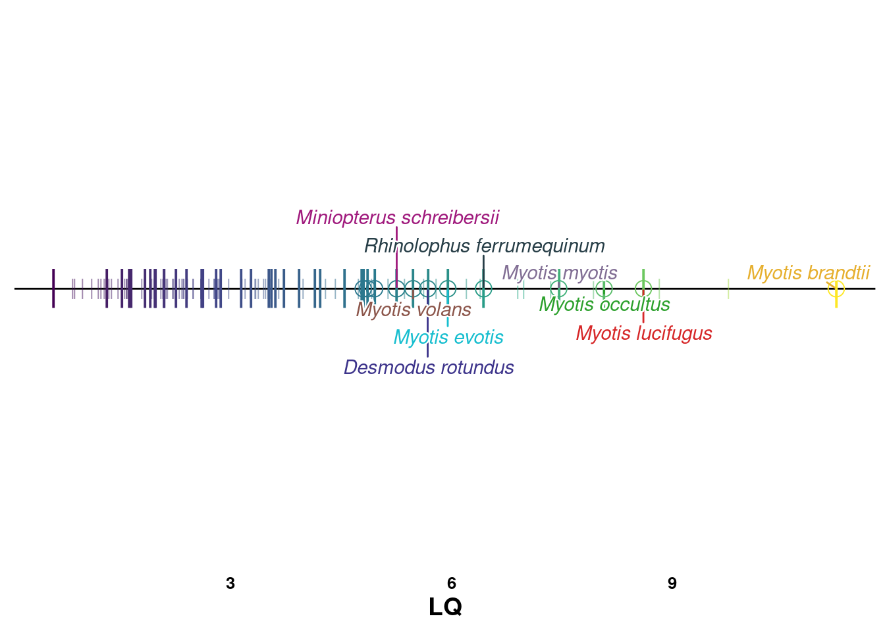

absrel
docmanny
2023-11-08
Last updated: 2023-12-21
Checks: 7 0
Knit directory: R_workflowr/analysis/
This reproducible R Markdown analysis was created with workflowr (version 1.7.1). The Checks tab describes the reproducibility checks that were applied when the results were created. The Past versions tab lists the development history.
Great! Since the R Markdown file has been committed to the Git repository, you know the exact version of the code that produced these results.
Great job! The global environment was empty. Objects defined in the global environment can affect the analysis in your R Markdown file in unknown ways. For reproduciblity it’s best to always run the code in an empty environment.
The command set.seed(20230501) was run prior to running
the code in the R Markdown file. Setting a seed ensures that any results
that rely on randomness, e.g. subsampling or permutations, are
reproducible.
Great job! Recording the operating system, R version, and package versions is critical for reproducibility.
Nice! There were no cached chunks for this analysis, so you can be confident that you successfully produced the results during this run.
Great job! Using relative paths to the files within your workflowr project makes it easier to run your code on other machines.
Great! You are using Git for version control. Tracking code development and connecting the code version to the results is critical for reproducibility.
The results in this page were generated with repository version 16e2cd7. See the Past versions tab to see a history of the changes made to the R Markdown and HTML files.
Note that you need to be careful to ensure that all relevant files for
the analysis have been committed to Git prior to generating the results
(you can use wflow_publish or
wflow_git_commit). workflowr only checks the R Markdown
file, but you know if there are other scripts or data files that it
depends on. Below is the status of the Git repository when the results
were generated:
Ignored files:
Ignored: R_workflowr/.Rproj.user/
Ignored: R_workflowr/analysis/figure/
Ignored: R_workflowr/data/
Ignored: R_workflowr/output/pubFiles/
Ignored: R_workflowr/output/webGestalt/
Ignored: R_workflowr/renv/library/
Ignored: R_workflowr/renv/staging/
Ignored: R_workflowr/test.phy
Unstaged changes:
Modified: R_workflowr/output/subfigs/phylo_auNG_circ_col_withLine.pdf
Note that any generated files, e.g. HTML, png, CSS, etc., are not included in this status report because it is ok for generated content to have uncommitted changes.
These are the previous versions of the repository in which changes were
made to the R Markdown (R_workflowr/analysis/absrel.Rmd)
and HTML (R_workflowr/docs/absrel.html) files. If you’ve
configured a remote Git repository (see ?wflow_git_remote),
click on the hyperlinks in the table below to view the files as they
were in that past version.
| File | Version | Author | Date | Message |
|---|---|---|---|---|
| Rmd | 16e2cd7 | docmanny | 2023-12-21 | bugfix: refactor error |
| Rmd | ec8e248 | docmanny | 2023-12-21 | bugfix: duplicate chunk name |
| Rmd | 8f66d05 | docmanny | 2023-12-21 | clean version of Fig 1, now with LQ |
| Rmd | 77bd637 | docmanny | 2023-12-19 | added more figs |
| Rmd | 3d9fd9c | docmanny | 2023-12-15 | draft sub figs for F1&2 |
Introduction
library(tidyverse)── Attaching core tidyverse packages ──────────────────────── tidyverse 2.0.0 ──
✔ dplyr 1.1.3 ✔ readr 2.1.4
✔ forcats 1.0.0 ✔ stringr 1.5.0
✔ ggplot2 3.4.3 ✔ tibble 3.2.1
✔ lubridate 1.9.2 ✔ tidyr 1.3.0
✔ purrr 1.0.2
── Conflicts ────────────────────────────────────────── tidyverse_conflicts() ──
✖ dplyr::filter() masks stats::filter()
✖ dplyr::lag() masks stats::lag()
ℹ Use the conflicted package (<http://conflicted.r-lib.org/>) to force all conflicts to become errorslibrary(ggpubr)
library(ComplexHeatmap)Loading required package: grid
========================================
ComplexHeatmap version 2.14.0
Bioconductor page: http://bioconductor.org/packages/ComplexHeatmap/
Github page: https://github.com/jokergoo/ComplexHeatmap
Documentation: http://jokergoo.github.io/ComplexHeatmap-reference
If you use it in published research, please cite either one:
- Gu, Z. Complex Heatmap Visualization. iMeta 2022.
- Gu, Z. Complex heatmaps reveal patterns and correlations in multidimensional
genomic data. Bioinformatics 2016.
The new InteractiveComplexHeatmap package can directly export static
complex heatmaps into an interactive Shiny app with zero effort. Have a try!
This message can be suppressed by:
suppressPackageStartupMessages(library(ComplexHeatmap))
========================================library(WebGestaltR)******************************************
* *
* Welcome to WebGestaltR ! *
* *
******************************************library(ggnewscale)
library(ggrepel)
library(grid)
library(cowplot)
Attaching package: 'cowplot'
The following object is masked from 'package:ggpubr':
get_legend
The following object is masked from 'package:lubridate':
stampdf <- read_tsv('../data/absrel_highlight/BatsOnly_LQ_quartile4-branchAttributes.csv')Rows: 862510 Columns: 13
── Column specification ────────────────────────────────────────────────────────
Delimiter: "\t"
chr (3): species, gene, original name
dbl (10): Baseline MG94xREV, Baseline MG94xREV omega ratio, Corrected P-valu...
ℹ Use `spec()` to retrieve the full column specification for this data.
ℹ Specify the column types or set `show_col_types = FALSE` to quiet this message.tt <- read_csv('../data/Myotis_alignments_sequence_map_files_20230622 - Myotis_alignments_sequence_map_files_20230622.csv')Rows: 23080 Columns: 16
── Column specification ────────────────────────────────────────────────────────
Delimiter: ","
chr (13): human_ID, human_gene_name, myotis_ali_fn, velifer_ID, auriculus_ID...
dbl (1): nb_myotis_sp
lgl (2): velifer_human_onetoone, velifer_human_strongblast
ℹ Use `spec()` to retrieve the full column specification for this data.
ℹ Specify the column types or set `show_col_types = FALSE` to quiet this message.df.lq.bats.ntiles <- read_tsv('../data/lifehistory/manny_mammal_agedata_harmonized.withLQ_hasAli_hasNTiles.tsv')Rows: 106 Columns: 13
── Column specification ────────────────────────────────────────────────────────
Delimiter: "\t"
chr (2): label, Order
dbl (10): size, lifespan, predLife, LQ, decile, septile, quintile, quartile,...
lgl (1): has.ali
ℹ Use `spec()` to retrieve the full column specification for this data.
ℹ Specify the column types or set `show_col_types = FALSE` to quiet this message.df.tt <- df %>%
left_join(
tt,
by=c('gene' = 'myotis_ali_fn')
) %>%
mutate(p.val = `Corrected P-value`)
all_genes <- df.tt %>%
pull(human_gene_name) %>%
uniqueour_genomes = c(
"Myotis_auriculus",
"Myotis_californicus",
"Myotis_occultus",
"Myotis_lucifugus",
"Myotis_yumanensis",
"Myotis_volans",
"Myotis_velifer",
"Myotis_evotis",
"Myotis_thysanodes"
)
species_color = ggsci::pal_d3(palette = "category20")(length(our_genomes)+1) %>%
set_names(., c(our_genomes, "Other"))
species_color["Myotis_evotis"] = "#17BECF"
species_color["Other"] = "#7F7F7F"df.val <- df %>%
select(species, gene, LRT, p.val = `Corrected P-value`) %>%
filter(!is.na(p.val))df.val %>%
group_by(species) %>%
summarize(
n = n(),
n.sig = sum(p.val<=0.05)
)# A tibble: 9 × 3
species n n.sig
<chr> <int> <int>
1 Desmodus_rotundus 15596 231
2 Miniopterus_schreibersii 14280 120
3 Myotis_brandtii 14033 408
4 Myotis_evotis 16307 168
5 Myotis_lucifugus 16430 207
6 Myotis_myotis 14560 317
7 Myotis_occultus 16316 203
8 Myotis_volans 16321 210
9 Rhinolophus_ferrumequinum 15752 325df.val %>%
ggplot(
aes(
x=LRT,
y=p.val,
color=species
)
) +
geom_point() +
facet_wrap(vars(species), scales='free') +
theme_pubr() +
theme(legend.position = 'none') +
labs_pubr()
ggpubr::gghistogram(df.val %>% mutate(p.val=p.val), x="p.val",bins=100) +
facet_wrap(vars(species)) +
scale_y_log10()Warning: Transformation introduced infinite values in continuous y-axis
# theme_pubr() +
# labs_pubr()df.val.geneID <- df.tt %>%
filter(p.val<=0.05)
list.geneid <- df.val.geneID %>%
select(species, human_gene_name) %>%
group_split(species)
list.geneid <-
magrittr::set_names(list.geneid, list.geneid %>% sapply(. %>% pull(species) %>% unique)) %>%
lapply(pull, human_gene_name)mat.absrel <- list_to_matrix(list.geneid)
m1 <- make_comb_mat(mat.absrel)
set_name(m1)[1] "Desmodus_rotundus" "Miniopterus_schreibersii"
[3] "Myotis_brandtii" "Myotis_evotis"
[5] "Myotis_lucifugus" "Myotis_myotis"
[7] "Myotis_occultus" "Myotis_volans"
[9] "Rhinolophus_ferrumequinum"cols_comb_core <- c(
"000010000" = species_color[['Myotis_lucifugus']], # myoLuc
"000000100" = species_color[['Myotis_occultus']], # myoOcc
"000100000" = species_color[['Myotis_evotis']], # myoEvo
"000000010" = species_color[['Myotis_volans']], # myoVol
"001000000" = '#E6AF2E', # myoBra
"000001000" = '#816E94', # myoMyo
"100000000" = '#3D348B', # desRot
"010000000" = '#A01A7D', # minSch
"000000001" = '#273E47', # rhiFer
"001111110" = 'red', # panMyo
"110000001" = 'white', # notMyo
"001110110" = 'green', # neaMyo
"000110110" = 'blue', # wesMyo
"000010100" = 'goldenrod' # LucOcc
)
unhighlighted <- setdiff(
# comb_name(m1)[order(comb_size(m1),decreasing = T)],
comb_name(m1),
names(cols_comb_core)
)
cols_comb <- c(
cols_comb_core,
set_names(
rep('#000000', times=length(unhighlighted)),
unhighlighted
)
)
order_set <- c(
'Myotis_lucifugus',
'Myotis_occultus',
'Myotis_evotis',
'Myotis_brandtii',
'Myotis_volans',
'Myotis_myotis',
'Desmodus_rotundus',
'Miniopterus_schreibersii',
'Rhinolophus_ferrumequinum'
)
order_cols_core <- match(names(cols_comb_core), names(comb_size(m1))) %>%
set_names(., names(cols_comb_core)) %>%
.[!is.na(.)]
order_cols = c(
order_cols_core %>% unname,
setdiff(order(comb_size(m1),decreasing = T), order_cols_core)
)
cols_set <- c(
"Desmodus_rotundus" = '#3D348B',
"Miniopterus_schreibersii" = '#A01A7D',
"Myotis_brandtii" = '#E6AF2E',
"Myotis_evotis" = species_color[['Myotis_evotis']],
"Myotis_lucifugus" = species_color[['Myotis_lucifugus']],
"Myotis_myotis" = '#816E94',
"Myotis_occultus" = species_color[['Myotis_occultus']],
"Myotis_volans" = species_color[['Myotis_volans']],
"Rhinolophus_ferrumequinum" = '#273E47'
)UpSet(
m1,
set_order = order_set,
comb_order = order_cols,
comb_col = cols_comb[comb_name(m1)],
)
subset_m <- m1[comb_name(m1) %in% names(cols_comb_core)]
order_cols_sub = c(
match(names(cols_comb_core), names(comb_size(subset_m))) %>%
.[!is.na(.)],
setdiff(order(comb_size(subset_m),decreasing = T), order_cols_core)
)
u1 <- UpSet(
subset_m,
set_order = order_set,
comb_col = cols_comb[comb_name(subset_m)],
left_annotation = rowAnnotation(
set_name = anno_text(
set_name(subset_m),
location = 0.5,
just = "center",
width = max_text_width(set_name(subset_m)) + unit(4, "mm")
),
"Postively-Selected Genes" = anno_barplot(
-set_size(subset_m),
baseline = 0,
axis_param = list(
at = c(0, -100, -200, -300, -400),
labels = c(0, 100, 200, 300, 400),
labels_rot = 0
),
border = FALSE,
gp = gpar(fill = "black"),
width = unit(4, "cm")
)
),
right_annotation = NULL,
show_row_names=F
)
ht=draw(u1)
library(ggtree)ggtree v3.6.2 For help: https://yulab-smu.top/treedata-book/
If you use the ggtree package suite in published research, please cite
the appropriate paper(s):
Guangchuang Yu, David Smith, Huachen Zhu, Yi Guan, Tommy Tsan-Yuk Lam.
ggtree: an R package for visualization and annotation of phylogenetic
trees with their covariates and other associated data. Methods in
Ecology and Evolution. 2017, 8(1):28-36. doi:10.1111/2041-210X.12628
Shuangbin Xu, Lin Li, Xiao Luo, Meijun Chen, Wenli Tang, Li Zhan, Zehan
Dai, Tommy T. Lam, Yi Guan, Guangchuang Yu. Ggtree: A serialized data
object for visualization of a phylogenetic tree and annotation data.
iMeta 2022, 1(4):e56. doi:10.1002/imt2.56
LG Wang, TTY Lam, S Xu, Z Dai, L Zhou, T Feng, P Guo, CW Dunn, BR
Jones, T Bradley, H Zhu, Y Guan, Y Jiang, G Yu. treeio: an R package
for phylogenetic tree input and output with richly annotated and
associated data. Molecular Biology and Evolution. 2020, 37(2):599-603.
doi: 10.1093/molbev/msz240
Attaching package: 'ggtree'The following object is masked from 'package:ggpubr':
rotateThe following object is masked from 'package:tidyr':
expandlibrary(treeio)treeio v1.25.4 For help: https://yulab-smu.top/treedata-book/
If you use the ggtree package suite in published research, please cite
the appropriate paper(s):
LG Wang, TTY Lam, S Xu, Z Dai, L Zhou, T Feng, P Guo, CW Dunn, BR
Jones, T Bradley, H Zhu, Y Guan, Y Jiang, G Yu. treeio: an R package
for phylogenetic tree input and output with richly annotated and
associated data. Molecular Biology and Evolution. 2020, 37(2):599-603.
doi: 10.1093/molbev/msz240
Shuangbin Xu, Lin Li, Xiao Luo, Meijun Chen, Wenli Tang, Li Zhan, Zehan
Dai, Tommy T. Lam, Yi Guan, Guangchuang Yu. Ggtree: A serialized data
object for visualization of a phylogenetic tree and annotation data.
iMeta 2022, 1(4):e56. doi:10.1002/imt2.56
G Yu. Data Integration, Manipulation and Visualization of Phylogenetic
Trees (1st ed.). Chapman and Hall/CRC. 2022. ISBN: 9781032233574library(tidytree)If you use the ggtree package suite in published research, please cite
the appropriate paper(s):
Shuangbin Xu, Lin Li, Xiao Luo, Meijun Chen, Wenli Tang, Li Zhan, Zehan
Dai, Tommy T. Lam, Yi Guan, Guangchuang Yu. Ggtree: A serialized data
object for visualization of a phylogenetic tree and annotation data.
iMeta 2022, 1(4):e56. doi:10.1002/imt2.56
LG Wang, TTY Lam, S Xu, Z Dai, L Zhou, T Feng, P Guo, CW Dunn, BR
Jones, T Bradley, H Zhu, Y Guan, Y Jiang, G Yu. treeio: an R package
for phylogenetic tree input and output with richly annotated and
associated data. Molecular Biology and Evolution. 2020, 37(2):599-603.
doi: 10.1093/molbev/msz240
Attaching package: 'tidytree'The following object is masked from 'package:treeio':
getNodeNumThe following object is masked from 'package:stats':
filterlibrary(MCMCtreeR)Loading required package: ape
Attaching package: 'ape'The following objects are masked from 'package:tidytree':
drop.tip, keep.tipThe following object is masked from 'package:treeio':
drop.tipThe following object is masked from 'package:ggtree':
rotateThe following object is masked from 'package:ggpubr':
rotateThe following object is masked from 'package:dplyr':
whereLoading required package: snLoading required package: stats4
Attaching package: 'sn'The following object is masked from 'package:lubridate':
dstThe following object is masked from 'package:stats':
sdLoading required package: codalibrary(dendextend)
---------------------
Welcome to dendextend version 1.17.1
Type citation('dendextend') for how to cite the package.
Type browseVignettes(package = 'dendextend') for the package vignette.
The github page is: https://github.com/talgalili/dendextend/
Suggestions and bug-reports can be submitted at: https://github.com/talgalili/dendextend/issues
You may ask questions at stackoverflow, use the r and dendextend tags:
https://stackoverflow.com/questions/tagged/dendextend
To suppress this message use: suppressPackageStartupMessages(library(dendextend))
---------------------
Attaching package: 'dendextend'The following objects are masked from 'package:ape':
ladderize, rotateThe following object is masked from 'package:ggtree':
rotateThe following object is masked from 'package:ggpubr':
rotateThe following object is masked from 'package:stats':
cutreetimetree <- readMCMCtree('../data/timetree/Run2_real_combined_allGenesAllSpecies/FigTree.tre')$apePhy %>%
keep.tip(order_set)
timetree <- timetree %>% ape::rotate(16) %>% ape::rotate(17)
tt.hclust <- as.hclust(timetree)
phylo_row_dend = as.dendrogram(tt.hclust)p.lq <- df.lq.bats.ntiles %>%
# mutate(y=0.02 %>% multiply_by(rep(c(1,-1), times=5))) %>%
ggplot(
aes(
x=LQ,
y=0,
color=LQ,
fill=LQ
)
) +
geom_hline(yintercept=0) +
geom_point(
shape = '|',
size=4,
alpha=0.5
) +
geom_point(
data=. %>% filter(has.ali),
shape = '|',
size=8,
) +
geom_point(
data = . %>%
filter(
has.ali,
quartile==4
),
shape=1,
size=4
) +
scale_color_viridis_c(option='D') +
ggnewscale::new_scale_color() +
geom_text_repel(
data = . %>%
filter(
has.ali,
quintile==5
),
aes(
label=label %>% str_replace_all("_", " "),
color=label
),force = 10, max.overlaps = 1100, direction = 'y',
hjust=0.5,min.segment.length = 0,
fontface='italic',
bg.color='white'
) +
scale_color_manual('Species', values = cols_set) +
# theme_void() +
labs(x="LQ") +
theme_minimal() +
labs_pubr() +
theme(
legend.position = 'none',
axis.line.y=element_blank(),
axis.text.y=element_blank(),
axis.ticks.y=element_blank(),
axis.title.y=element_blank(),
panel.grid = element_blank()
)
p.lq
p.ht <- grid.grabExpr(
draw(u1),
width=unit(6, 'in'),
height=unit(4, 'in')
)
p.tr <- revts(ggtree(timetree) + theme_tree2()) +
scale_x_continuous(labels=abs)WebGestaltR
Prep
sets = list(
desRot = extract_comb(m1, '100000000'),
minSch = extract_comb(m1, '010000000'),
myoBra = extract_comb(m1, '001000000'),
myoEvo = extract_comb(m1, '000100000'),
myoLuc = extract_comb(m1, '000010000'),
myoMyo = extract_comb(m1, '000001000'),
myoOcc = extract_comb(m1, '000000100'),
myoVol = extract_comb(m1, '000000010'),
rhiFer = extract_comb(m1, '000000001'),
panMyo = extract_comb(m1, '001111110'),
notMyo = extract_comb(m1, '110000001'),
neaMyo = extract_comb(m1, '001110110'),
wesMyo = extract_comb(m1, '000110110'),
LucOcc = extract_comb(m1, '000010100')
)dir.create('../output/webGestalt/', recursive=T, showWarnings = F)
for (set in names(sets)) {
opath <- paste0('../output/webGestalt/', set)
dir.create(opath, recursive=T, showWarnings = F)
sets[[set]] %>% write_lines(paste0(opath, '/aBSREL-', set, '.txt'))
all_genes %>% write_lines(paste0(opath, 'aBSREL-allGenes.txt'))
}run_ORA <- function(geneSet, refGeneSet, outputDirectory, enrichmentDB, fdrThr, projName){
WebGestaltR(
enrichMethod = "ORA",
enrichDatabase = enrichmentDB,
organism = "hsapiens",
interestGene = geneSet,
interestGeneType = "genesymbol",
referenceGene = refGeneSet,
referenceGeneType = "genesymbol",
maxNum=1000,
sigMethod="top",
topThr=100,
fdrThr=as.numeric(fdrThr),
reportNum=100,
isOutput = T,
outputDirectory = outputDirectory,
hostName="http://www.webgestalt.org/",
projectName=projName
)
}
enrichments <- lapply(
names(sets)[1],
function(n, s=sets, a=all_genes, e='pathway_Reactome', f=0.1, p = 'aBSREL'){
run_ORA(
# geneSet = s[[n]],
refGeneSet = a,
outputDirectory = paste0('../output/webGestalt/', n),
enrichmentDB = e,
fdrThr = f,
projName = p
)
}
)All Myotis Nodes
sessionInfo()R version 4.3.1 (2023-06-16)
Platform: x86_64-pc-linux-gnu (64-bit)
Running under: Ubuntu 22.04.3 LTS
Matrix products: default
BLAS: /usr/lib/x86_64-linux-gnu/blas/libblas.so.3.10.0
LAPACK: /usr/lib/x86_64-linux-gnu/lapack/liblapack.so.3.10.0
locale:
[1] LC_CTYPE=C.UTF-8 LC_NUMERIC=C LC_TIME=C.UTF-8
[4] LC_COLLATE=C.UTF-8 LC_MONETARY=C.UTF-8 LC_MESSAGES=C.UTF-8
[7] LC_PAPER=C.UTF-8 LC_NAME=C LC_ADDRESS=C
[10] LC_TELEPHONE=C LC_MEASUREMENT=C.UTF-8 LC_IDENTIFICATION=C
time zone: America/La_Paz
tzcode source: system (glibc)
attached base packages:
[1] stats4 grid stats graphics grDevices utils datasets
[8] methods base
other attached packages:
[1] dendextend_1.17.1 MCMCtreeR_1.1 coda_0.19-4
[4] sn_2.1.1 ape_5.7-1 tidytree_0.4.5
[7] treeio_1.25.4 ggtree_3.6.2 cowplot_1.1.1
[10] ggrepel_0.9.4 ggnewscale_0.4.9 WebGestaltR_0.4.6
[13] ComplexHeatmap_2.14.0 ggpubr_0.6.0 lubridate_1.9.2
[16] forcats_1.0.0 stringr_1.5.0 dplyr_1.1.3
[19] purrr_1.0.2 readr_2.1.4 tidyr_1.3.0
[22] tibble_3.2.1 ggplot2_3.4.3 tidyverse_2.0.0
loaded via a namespace (and not attached):
[1] mnormt_2.1.1 gridExtra_2.3 rlang_1.1.1
[4] magrittr_2.0.3 clue_0.3-65 GetoptLong_1.0.5
[7] git2r_0.32.0 matrixStats_1.0.0 compiler_4.3.1
[10] png_0.1-8 systemfonts_1.0.4 vctrs_0.6.3
[13] pkgconfig_2.0.3 shape_1.4.6 crayon_1.5.2
[16] fastmap_1.1.1 magick_2.8.1 backports_1.4.1
[19] labeling_0.4.3 utf8_1.2.3 promises_1.2.1
[22] rmarkdown_2.25 tzdb_0.4.0 bit_4.0.5
[25] xfun_0.40 cachem_1.0.8 aplot_0.2.1
[28] jsonlite_1.8.7 later_1.3.1 broom_1.0.5
[31] parallel_4.3.1 cluster_2.1.4 R6_2.5.1
[34] bslib_0.5.1 stringi_1.7.12 RColorBrewer_1.1-3
[37] car_3.1-2 numDeriv_2016.8-1.1 jquerylib_0.1.4
[40] Rcpp_1.0.11 iterators_1.0.14 knitr_1.44
[43] IRanges_2.34.1 httpuv_1.6.11 Matrix_1.6-1.1
[46] igraph_1.5.1 timechange_0.2.0 tidyselect_1.2.0
[49] viridis_0.6.4 rstudioapi_0.15.0 abind_1.4-5
[52] yaml_2.3.7 doParallel_1.0.17 codetools_0.2-19
[55] doRNG_1.8.6 lattice_0.21-8 withr_2.5.0
[58] evaluate_0.21 gridGraphics_0.5-1 circlize_0.4.15
[61] pillar_1.9.0 carData_3.0-5 rngtools_1.5.2
[64] whisker_0.4.1 foreach_1.5.2 ggfun_0.1.3
[67] generics_0.1.3 vroom_1.6.3 rprojroot_2.0.3
[70] S4Vectors_0.38.2 hms_1.1.3 munsell_0.5.0
[73] scales_1.2.1 apcluster_1.4.11 glue_1.6.2
[76] lazyeval_0.2.2 tools_4.3.1 ggsignif_0.6.4
[79] fs_1.6.3 colorspace_2.1-0 patchwork_1.1.3
[82] nlme_3.1-163 cli_3.6.1 workflowr_1.7.1
[85] fansi_1.0.5 viridisLite_0.4.2 svglite_2.1.1
[88] gtable_0.3.4 yulab.utils_0.1.0 ggsci_3.0.0
[91] rstatix_0.7.2 sass_0.4.7 digest_0.6.33
[94] BiocGenerics_0.46.0 ggplotify_0.1.2 rjson_0.2.21
[97] farver_2.1.1 memoise_2.0.1 htmltools_0.5.6
[100] lifecycle_1.0.3 httr_1.4.7 GlobalOptions_0.1.2
[103] bit64_4.0.5